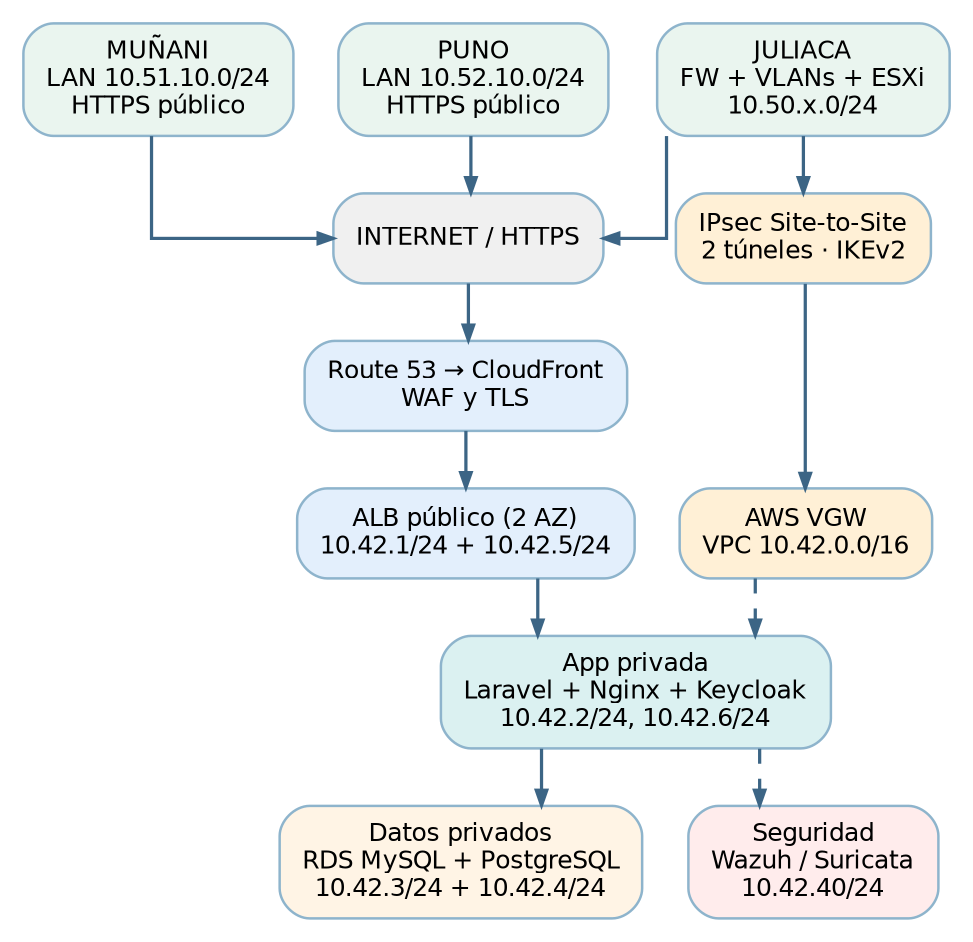

Muñani
Sucursal comercial considerada en el diseño. Acceso web mediante HTTPS.
Planificación empresarial, infraestructura híbrida y diseño de software para Creaciones y Artesanías Juanito. Sucursales de Muñani, Juliaca y Puno. Documentación coherente y disponible en PDF.
Una única propuesta funcional y técnica compartida por todos los cursos, con responsabilidades claramente delimitadas.
Sucursal comercial considerada en el diseño. Acceso web mediante HTTPS.
Sucursal con nodo local VMware ESXi y VPN IPsec propuestos para el diseño híbrido.
Sucursal comercial considerada. Procesos y usuarios integrados en la plataforma común.
Dirección de referencia: VPC 10.42.0.0/16. Las evidencias CE03 describen el diseño AWS + entorno local; CE01 justifica el proyecto y CE02 define su comportamiento.

CE01 fija los objetivos, costos, alcance, responsables y procesos de negocio.
CE03 documenta VPC, subredes, acceso HTTPS, VPN, ESXi, identidad y monitoreo.
CE02 define requisitos, estados, reglas, componentes y trazabilidad.
Diseños técnicos del primer semestre. El SGSI corresponde a S2 y permanece identificado como trabajo posterior.
Topología lógica, direccionamiento, segmentación, perímetro, flujos permitidos, VPN IPsec con ESXi local, riesgos y pruebas proyectadas.
Arquitectura local + AWS, dimensionamiento preliminar, componentes, capacidad, disponibilidad, continuidad, objetivos RTO/RPO y hoja de ruta.
Inventario de activos, evaluación y tratamiento de riesgos, Declaración de Aplicabilidad y controles ISO/IEC 27001.
Las cuatro evidencias S1 se vinculan con COBIT, planificación del proyecto y rediseño de procesos comerciales de Juanito.
Contexto de la empresa, brechas digitales, priorización de problemas, objetivos SMART, estrategia TI y mapa de alineamiento.
Necesidad de inversión, alternativas tecnológicas, evaluación de beneficios y costos, viabilidad y análisis de riesgos.
Constitución del proyecto, alcance, estructura de trabajo, cronograma, responsables, recursos, presupuesto y seguimiento.
Procesos actuales por verificar frente a procesos futuros propuestos, con reglas de cotización, pedido, fabricación y venta.
El primer entregable de CE02 define cómo funcionará el sistema con nueve módulos y qué debe validarse antes de implementarlo.
Especificación RF/RNF, reglas de negocio, historias de usuario, criterios de aceptación, prototipo V3, vistas C4, decisiones arquitectónicas, UML de estados y matriz de trazabilidad. Falta la validación formal del negocio.
Cada módulo concentra reglas y datos propios. El prototipo actual no implementa estos nueve módulos de producción.
Todos los documentos PDF se alojan dentro de este mismo repositorio. Así podrás compartir la web sin depender de archivos externos para consultar las evidencias.
PDF de CE01-S1 y CE03-S1, prototipo V3, diagramas y diseño compartido.
CE02-S1 con requisitos, modelo propuesto y validación de stakeholders pendiente.
Despliegue productivo de AWS/ESXi, métricas reales, entrevistas y resultados financieros.
Este portal es un organizador de evidencias. Ningún archivo, diagrama o enlace sustituye las capturas, firmas, actas y pruebas de cumplimiento exigidas por las rúbricas oficiales.
La página UPeU utilizada se titula «Eval. perfil egreso ≤ 2023». Si corresponde una malla curricular distinta, se debe confirmar su aplicación con el docente.